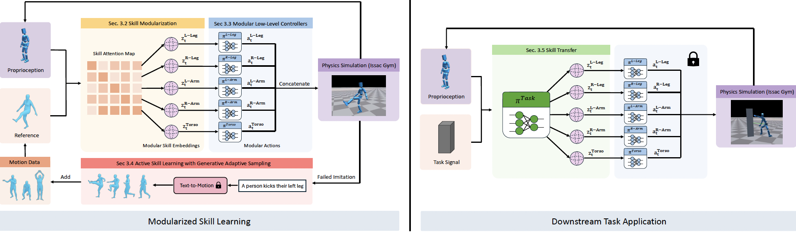

Human motion is highly diverse and dynamic, posing challenges for imitation learning algorithms that aim to generalize motor skills for controlling simulated characters. Prior methods typically rely on a universal full-body controller for tracking reference motion (tracking-based model) or a unified full-body skill embedding space (skill embedding). However, these approaches often struggle to generalize and scale to larger motion datasets. In this work, we introduce a novel skill learning framework, ModSkill, that decouples complex full-body skills into compositional, modular skills for independent body parts, leveraging body structure-inspired inductive bias to enhance skill learning performance. Our framework features a skill modularization attention mechanism that processes policy observations into modular skill embeddings that guide low-level controllers for each body part. We further propose an Active Skill Learning approach with Generative Adaptive Sampling, using large motion generation models to adaptively enhance policy learning in challenging tracking scenarios. Results show that this modularized skill learning framework, enhanced by generative sampling, outperforms existing methods in precise full-body motion tracking and enables reusable skill embeddings for diverse goal-driven tasks.

Left: We extract modular skills from a large-scale motion dataset using a motion imitation objective, enabling low-level controllers to control various body parts of a physically simulated character. Active skill learning, through adaptive sampling from an off-the-shelf motion generation model, further enhances policy performance. Right: The learned modular skills can be transferred to downstream tasks by freezing the low-level controllers and training a high-level policy with task-specific rewards.
@inproceedings{huang2025modskill,
title={Modskill: Physical character skill modularization},
author={Huang, Yiming and Dou, Zhiyang and Liu, Lingjie},
booktitle={IEEE/CVF International Conference on Computer Vision},
year={2025}
}